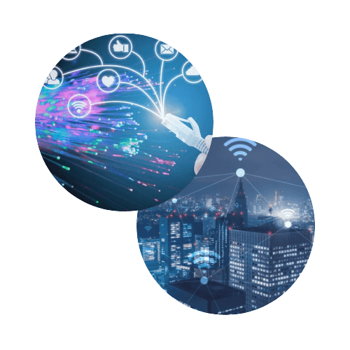

Dans une maison connectée, on retrouve différents objets connectés entre eux. Ces liaisons sont possibles :
par ondes (exemple : WiFi)
par cables (exemple : Ethernet)
Il existe plusieurs manière pour une maison connectée de fonctionner :
Chaque élement est contrôlable à distance (exemple : par smartphone, par une applcation dediée, etc)
Chaque objet se règle automatiquement en fonction des données relevés par des capteurs. On qualifiera alors cette maison connectée de maison intelligente.